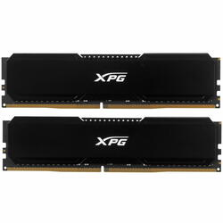
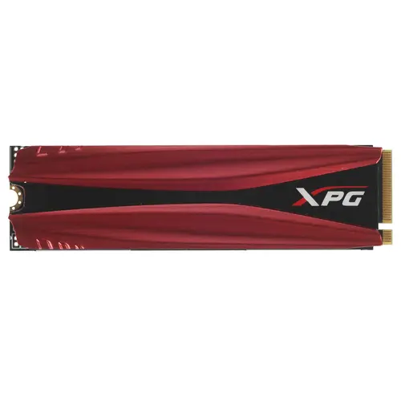
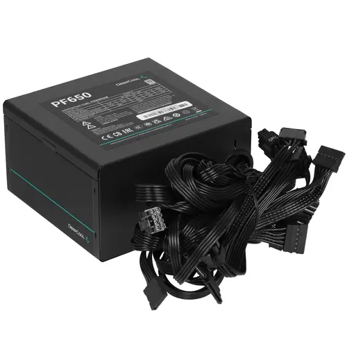

Готовая сборка компьютера за 90000рублей
Комплектующие компьютера
Процессор

Производительность: Процессор Intel Core i5-12400F обладает высокой производительностью благодаря 6 ядрам и 12 потокам, что обеспечивает отличное быстродействие для работы с многозадачными приложениями и играми. Оптимизация для игр: Процессор оснащен графическим ядром Intel Xe, которое обеспечивает высокую производительность в играх и позволяет запускать игры среднего и высокого уровня графики без дополнительной видеокарты. Энергоэффективность: Процессор имеет низкое энергопотребление, что позволяет сэкономить электроэнергию и снизить тепловыделение, что особенно важно для долгосрочного использования. Совместимость: Процессор совместим с множеством современных материнских плат на чипсете Intel Z690, что обеспечивает легкую совместимость с другими компонентами ПК. Цена: Процессор имеет отличное соотношение цены и производительности.
Материнская плата
Качество и надежность: Материнская плата MSI PRO B760M-P DDR4 известна своим высоким качеством и надежностью. MSI - это один из лидеров в производстве компьютерной техники, и их продукция хорошо зарекомендовала себя на рынке. Поддержка новейших технологий: Материнская плата MSI PRO B760M-P DDR4 обеспечивает поддержку последних технологий, включая поддержку оперативной памяти DDR4, USB 3.1, SATA 3 и других. Это обеспечивает высокую производительность и эффективность работы вашего компьютера. Хорошее соотношение цена-качество: Материнская плата MSI PRO B760M-P DDR4 предлагает отличное соотношение цена-качество. Вы получаете высококачественный продукт за разумные деньги, что делает ее отличным выбором для тех, кто хочет получить максимум за свои деньги.
Видеокарта
Данная видеокарта оснащена архитектурой Ampere и чипом GA106, что обеспечивает ей высокую производительность и эффективность работы. Благодаря технологии RTX она способна обеспечивать реалистичное воспроизведение лучей трассировки, что повышает уровень графики в играх и приложениях. Также видеокарта обладает 12 ГБ видеопамяти GDDR6X, что позволяет быстро обрабатывать большие объемы данных и обеспечивать плавную работу приложений. А два вентилятора и медная тепловая трубка на радиаторе помогают поддерживать низкую температуру во время работы, что предотвращает перегрев и обеспечивает стабильную работу видеокарты.
Кулер
Эффективное охлаждение: Кулер оснащен четырьмя тепловыми трубками и двумя вентиляторами, обеспечивающими эффективное охлаждение процессора. Это помогает снизить температуру работы процессора и увеличить его производительность. Низкий уровень шума: Вентиляторы кулера работают практически бесшумно, что обеспечивает тихую работу системы. Стильный дизайн: Кулер имеет яркую подсветку ARGB, которая добавляет стиль и индивидуальность вашему компьютеру. Простая установка: Кулер прост в установке и совместим с большинством современных процессоров. Долговечность: Кулер изготовлен из качественных материалов, что обеспечивает его надежную работу и долгий срок службы.
Оперативная память

Высокая производительность: оперативная память ADATA XPG GAMMIX D20 обеспечивает быструю передачу данных и обработку больших объемов информации благодаря высокой тактовой частоте и низким задержкам. Надежность: продукция ADATA известна своей надежностью и долговечностью. Благодаря качественным компонентам и строгим тестированиям, оперативная память ADATA XPG GAMMIX D20 обеспечивает стабильную работу вашего компьютера долгое время. Стильный дизайн: оперативная память ADATA XPG GAMMIX D20 имеет стильный и современный дизайн, который добавит эстетический вид вашему компьютеру и подчеркнет его производительность. Широкая совместимость: оперативная память ADATA XPG GAMMIX D20 поддерживает различные платформы и чипсеты, что делает ее идеальным выбором для различных систем Поддержка разгонных режимов: благодаря возможности работы в разгонных режимах, оперативная память ADATA XPG GAMMIX D20 позволяет получить дополнительный прирост производительности вашего компьютера.
Накопитель

Производительность: SSD M.2 накопитель ADATA XPG GAMMIX S11 Pro обладает высокой скоростью чтения и записи данных, что делает его идеальным для работы с большими объемами информации, быстрой загрузки приложений и операционной системы. Надежность: ADATA известен своей стабильностью и надежностью продукции, что подтверждает высокую долговечность SSD накопителя XPG GAMMIX S11 Pro. Вы можете быть уверены, что ваши данные будут в безопасности. Емкость: 1000 ГБ обеспечат вам достаточно места для хранения большого количества файлов, игр, программ и мультимедийного контента Удобство установки: SSD M.2 имеет компактный форм-фактор и легкую установку, что позволяет использовать его в широком спектре устройств, включая ноутбуки и настольные компьютеры. Отличное соотношение цена-качество: ADATA предлагает свои продукты по адекватной цене, тогда как качество и производительность накопителя XPG GAMMIX S11 Pro останутся на высоком уровне.
Блок питания
